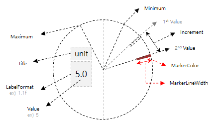

CircleStepper
CircleStepper allows the user to select a value from a range of incremental values specified with the Minimum, Maximum, and Increment properties.
It is extension of Xamarin.Forms.Stepper.
MarkerColor, MarkerLineWidth, and LabelFormat have been added to the existing Xamarin.Forms.Stepper.
You can change value with Bezel interaction.
In order to receive Rotary event, it must be registered as RotaryFocusObject property of CirclePage.

WARNNING: CircleListView, CircleDateTimeSelector, CircleScrollView, CircleStepper must be contained by CirclePage or CircleSurfaceEffectBehavior should be added in Behaviors of Page that contain these Control. If other page contains these control. It may cause exception or control can not be displayed.
Adding CircleStepper at CirclePage
You can set CircleStepper at CirclePage.Content. If you'd like to know how to add CirclePage, please refer to CirclePage guide.
The following code show CirclePage with CircleStepper.
RotaryFocusTargetName attribute sets the current focused control that is handled by rotating and display the focused control's circle object.
If you don't set this value properly, control can't receive Rotary event.
CircleStepper has the following properties:
- LabelFormat : Gets or sets format in which Value is shown.
- MarkerColor : Xamarin.Forms.Color. Change color of marker to select value.
- MarkerLineWidth : Gets or sets length of marker.
In the example below, we have a StackLayout with a CircleStepper and two labels in the CirclePage.
Since 9 is set to Minimum and LabelFormat is set to "% 1.1f", "9.0" appears on the screen. Increment is 7.5, so if you turn the bezel and increase Value, it increases by 7.5. Since the Maximum is 99, the marker does not exceed the value. Since MarkerColor is set to "Coral", it will be displayed as the corresponding color.
For more information. Please refer to below links
This guide's code example use XUIComponent's SpinnerDefault of CircleSpinner code at the sample\XUIComponents\UIComponents\UIComponents\Samples\CircleSpinner\SpinnerViewModel.cs and SpinnerDefault.xaml
C# file
public class SpinnerViewModel : INotifyPropertyChanged
{
double _value= 9.0;
...
public double Value
{
get => _value;
set
{
if (_value == value) return;
_value = value;
OnPropertyChanged();
}
}
XAML file
<w:CirclePage
x:Class="UIComponents.Samples.CircleSpinner.SpinnerDefault"
xmlns="http://xamarin.com/schemas/2014/forms"
xmlns:x="http://schemas.microsoft.com/winfx/2009/xaml"
xmlns:local="clr-namespace:UIComponents.Samples.CircleSpinner"
xmlns:sys="clr-namespace:System;assembly=netstandard"
xmlns:w="clr-namespace:Tizen.Wearable.CircularUI.Forms;assembly=Tizen.Wearable.CircularUI.Forms"
RotaryFocusTargetName="stepper">
<w:CirclePage.BindingContext>
<local:SpinnerViewModel />
</w:CirclePage.BindingContext>
<w:CirclePage.Content>
<StackLayout Padding="0,50,0,0" Orientation="Vertical">
<Label
FontAttributes="Bold"
FontSize="11"
HorizontalTextAlignment="Center"
Text="Title"
TextColor="#0FB4EF" />
<Label
FontSize="8"
HorizontalTextAlignment="Center"
Text="unit"
TextColor="White" />
<w:CircleStepper
x:Name="stepper"
HorizontalOptions="CenterAndExpand"
Increment="7.5"
LabelFormat="%1.1f"
MarkerColor="Coral"
Maximum="99.0"
Minimum="9.0"
Value="{Binding Value}" />
</StackLayout>
</w:CirclePage.Content>
<w:CirclePage.ActionButton>
<w:ActionButtonItem Command="{Binding ButtonPressedExit}" Text="SET" />
</w:CirclePage.ActionButton>
</w:CirclePage>
Screenshot